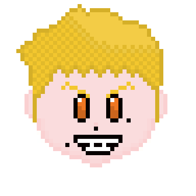

Andrew (The Jumpy Jester)
You find Andrew in the caves all alone, he loves sour candy and loves to joke around all the time. Forced to live all alone due to the townspeople getting sick of him he finds a weird book that talks to him all the time. The book also seems to release monsters as well, and now Andrew has no clue what to do now.
Go Back